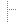
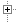

JJack
Jack-to-Java
JJack 0.3
Jack up Java!
Previous versions may be found in the distribution archive on the JJack development site.
You may also want to browse the sources online in the CVS archive.
The distribution archive contains:
lib/jjack.jar for instant JACK support when added to the classpathFile contents in archive jjack-0.3.tar.gz:
| jjack-0.3 | |||||||||||
 | bin | ||||||||||
 |  | jjack.sh | Script for invoking the JJack shell application. | ||||||||
| palette-jjack.xml | Palette file for the BeanBuilder including the JJack example clients (used by runBeanBuilder.sh). | |||||||||
|  | runBeanBuilder.sh | Script for starting the BeanBuilder with JJack support. | ||||||||
|  | classes | Compiled class files of all source files in src. | |||||||||
| doc | ||||||||||
| api | Auto-generated Javadoc API-documentation. | |||||||||
| img | ||||||||||
| | uml | |||||||||
| | | jjack.png | UML class diagram giving an overview on the JJack API. | |||||||
| www | JJack website. | |||||||||
| jjack.html | JJack manual. | |||||||||
| jjack-beanbuilder.html | Creating JJack clients with the BeanBuilder. | |||||||||
| jjack-clients.html | JJack example clients documentation. | |||||||||
| | jjack-develop.html | Developing JJack clients. | ||||||||
| lib | ||||||||||
| amd64 | ||||||||||
| | i386 | |||||||||
| |  | Linux | ||||||||
| |  | | libjjack.so | Native bridge library to connect the Java virtual machine as a JACK client. | ||||||
| macos | ||||||||||
| jjack.jar | JJack driver and API classes bundled in one .jar-file. | |||||||||
| | jjack-clients.jar | JJack example clients classes bundled in one .jar-file. Can be used as JavaBeans. | ||||||||
| make | ANT build script and helper files for building JJack. | ||||||||||
| src | The project's source files, including utility classes. | ||||||||||
| CHANGELOG | |||||||||||
| LICENSE | GNU Lesser General Public License document. | ||||||||||
| README | The readme-file with most basic information. | |||||||||
{kind=link}